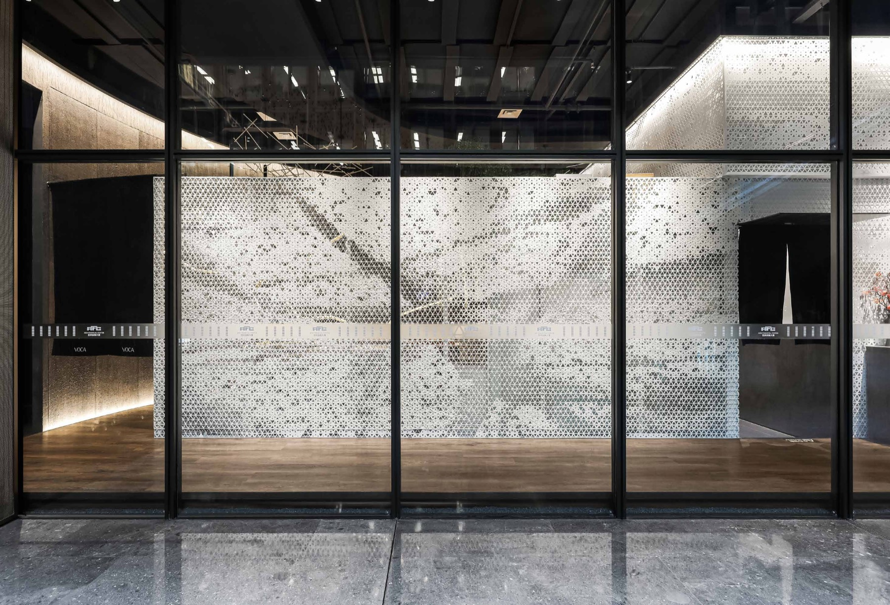

01Hospitality · Interior
VOCA Japanese Omakase
Can industrial metal take on the translucency of handmade washi paper in a fire-rated space?
Perforated aluminium panels were coated in raw paper pulp and prototyped over many rounds, testing light diffusion, touch and suspension, until the partition glowed like handmade paper. A curved black wall with a gold crack and suspended acrylic rods follow from the same material study.
- Practice
- AND lab
- Focus
- Material research · prototyping